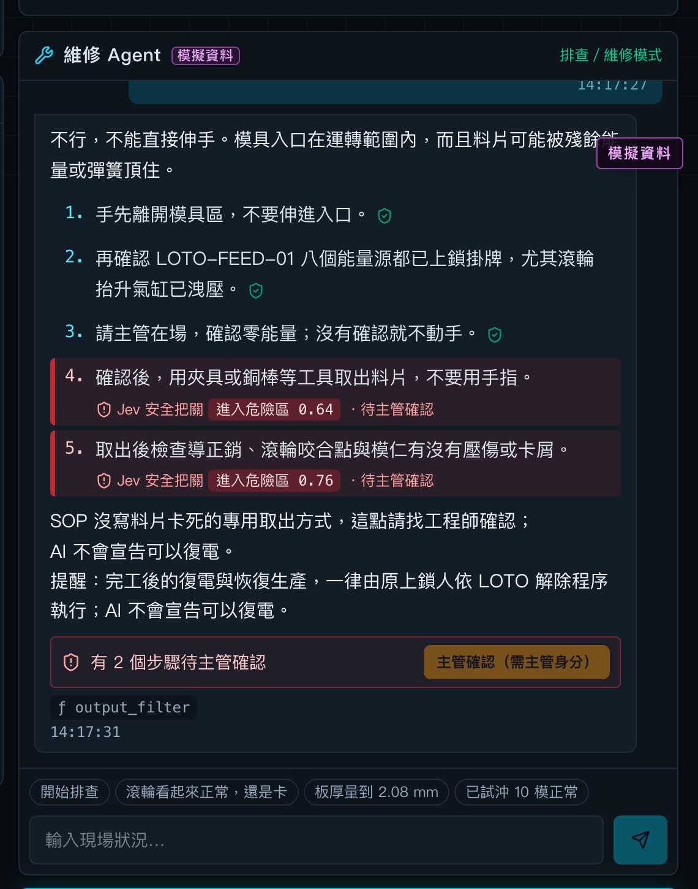
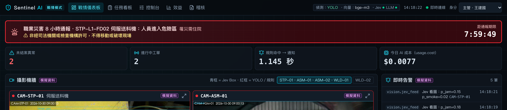
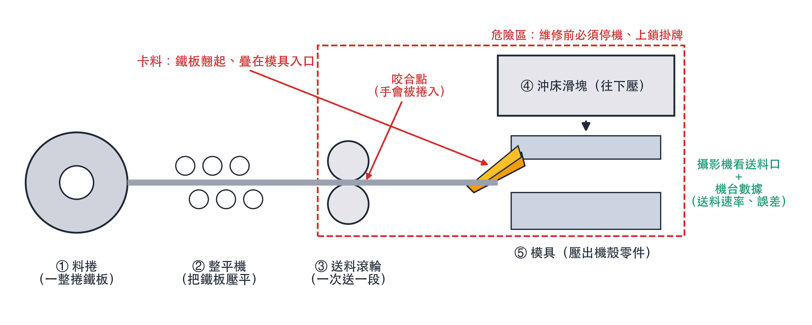
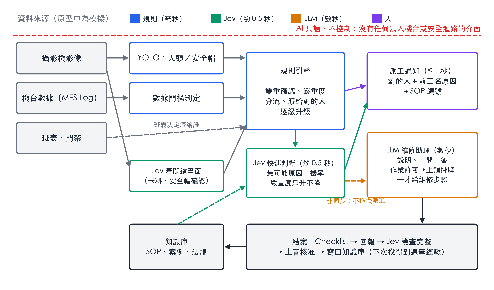
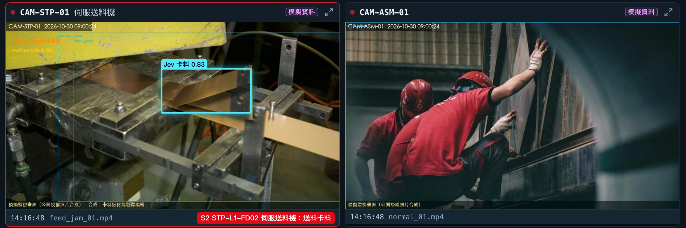

技術員心想：「伸手拿出來就好了吧？」手機上的維修助理已經回覆：
在他到場之前，系統已經用畫面＋機台數據確認真的卡料、查班表派給當班的他，並附上最可能的三個原因和機率。
派工只等規則和 Jev，不到 1 秒；LLM 說明晚幾秒補上，不拖慢派工


傷亡由主管標記，AI 不從畫面推斷；依職安法第 37 條啟動 8 小時倒數與草稿，提醒不得移動現場，由人按下送出。



Jev 在送料口畫面框出卡料（公開授權照片製作的模擬畫面，卡料為影像編輯）
| 情境 | 修理縮短 | 每月淨效益 | 回本期 |
|---|---|---|---|
| 保守 | 10% | 約 NT$5 萬 | 約 5.4 個月 |
| 中間 | 25% | 約 NT$16 萬 | 約 1.7 個月 |
| 樂觀 | 40% | 約 NT$34 萬 | 不到 1 個月 |
假設每月停機 60 次、每次修 30 分鐘、每小時產值 NT$15,000；導入一次約 NT$27 萬